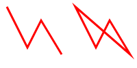
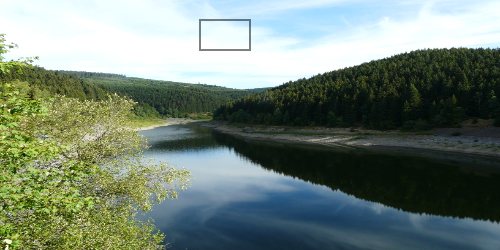

Element commands are higher level commands. The following elements are supported by g2.
| Element | Canvas | SVG | Result |
|---|---|---|---|
lin({x1,y1,x2,y2}) |
- | line |
Line element by start and end point. |
rec({x,y,b,h}) |
rect |
rect |
Rectangle element by anchor point, width and height. |
cir({x,y,r}) |
- | circle |
Circle element by center point and radius. |
arc({x,y,r,w,dw}) |
- | - | Arc element by center point, radius, start angle [radians] and angular range [radians]. |
ply({pts,closed,x,y,w}) |
- | polygon |
Polyline element by points array, closed mode [boolean] and iterator function. |
txt({str,x,y,w}) |
fillText |
text |
Text element by string, anchor point, angle and style object. |
img({uri,x,y,b,h, xoff,yoff,dx,dy}) |
drawImage |
image |
Image element by URI, anchor point, width, height, offset and range. |
ply Element
The ply command expects an object with a pts property.
This property can have different formats, for each of which there must be provided an individual
array iterator. g2 implements three standard iterators:
| Property Format | comment |
|---|---|
{pts:[x1,y1,x2,y2,...,xn,yn]} |
Flat array of x and y values [default]. |
{pts:[[x1,y1],[x2,y2],...,[xn,yn]]} |
Array of arrays of x and y values. |
{pts:[{x:x1,y:y1},{x:x2,y:y2},...,{x:xn,y:yn}]} |
Array of objects with x and y members. |
Another property of ply is closed which can have boolean values true and false.
const style={ls:"red",lw:3,fs:"ddd"};
g2().ply({pts:[10,10,40,70,60,30,90,80],...style})
.ply({pts:[[110,10],[140,70],[160,30],[190,80]],closed:true,...style})
.exe(ctx);

ply is also a convenient method for traces or paths to be drawn.
Just fill an array in the appropriate format and render it.
const arr = []; // array to be filled
let i = 0; // iterator
let forward = true;
(function render() {
i+=0.5;
// Fill array with values when going forward
forward ? arr.push({x: Math.cos(Math.PI * i / 60 ) * 40, y: Math.sin(Math.PI * i / 20) * 40})
// And remove values otherwise
: arr.shift();
// Toggle direction when path closes
if (arr.length === 240 || arr.length === 0) {
forward = !forward;
}
g2().del()
.clr()
.view({x: 75,y: 50})
.ply({pts:arr,ls:'blue',lw:3}) // render this array.
.exe(ctx);
requestAnimationFrame(render);
})();
Text
Text is supported by the txt command. One property of txt, str specifies the text string. The next two
x and y determine the anchor position of the text element. w describes the rotation angle and
the last style argument is an object containing individual text and font style information. That
style properties have priority over previously defined properties, but do not overwrite them.
const style={ls:"red",lw:3,fs:"ddd"};
g2().txt({str:"Hello world",x:30,y:50,w:-0.15,font:"32px cursive",fs:'rebeccapurple'})
.txt({str:"default style",x:210,y:40})
.exe(ctx);
Images
Images can be inserted by the img command. One property, uri, is the URI of the image, which
can also be a data:url. img has a lot of properties for the desired representation of the
image. x,y define the position of the upper left corner, b,h the breath and height,
xoff, yoff create an offset, sb,sh a region for the image and sx, sy may crop the image.
It can be scaled with scl.
Images are rendered asynchronously. The command queue stops when the image is to be drawn and continues after that. If more than one command queue is issued on one context, it may happen that the order of drawings is inconsistent.
<canvas id="c" height="250px" width="500px"></canvas>
<script src="../../g2/src/g2.core.js"></script>
<script>
const ctx = document.getElementById("c").getContext("2d");
const photo = "../img/photo.jpg";
g2().img({uri:photo,b:500,h:250})
.rec({x:200,y:20,b:50,h:30})
.exe(ctx);
</script>

If an image can not be loaded, it will be replaced by a broken-image symbol: